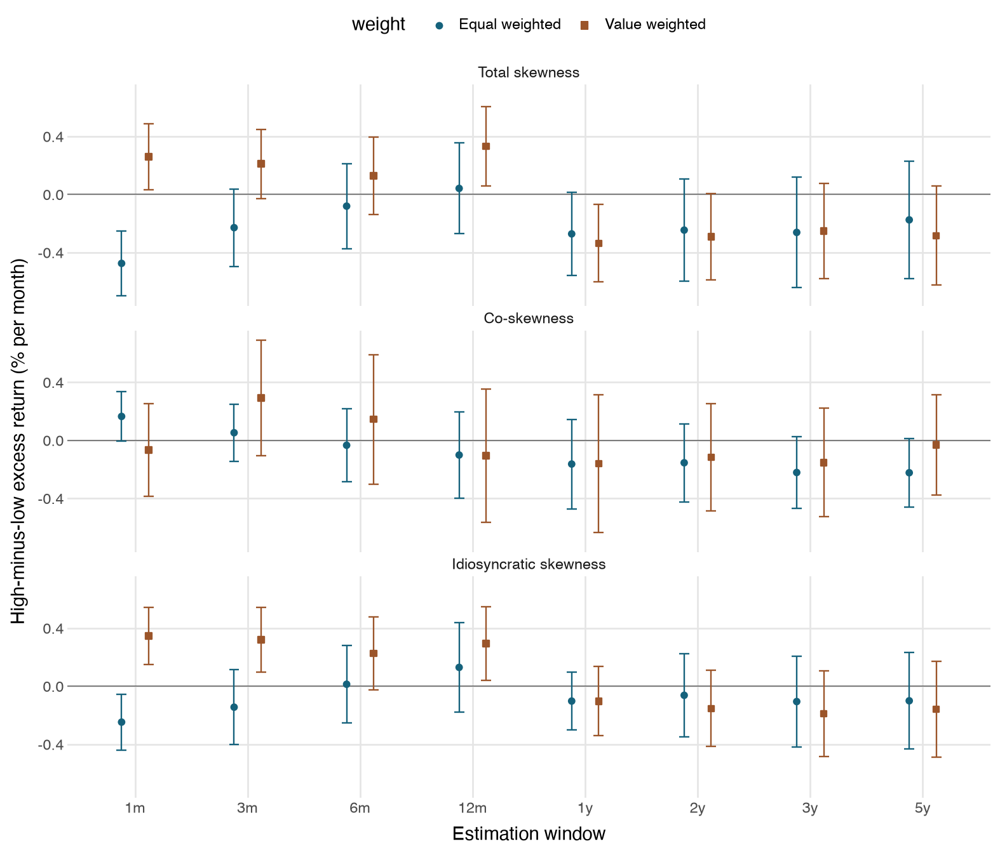

import polars as pl
from eap_pl import (
build_book_to_market, build_momentum, build_sizes, get_ff_factors, load_parquet, monthly_panel,
)
from eap_pl._skewness import rolling_skewness
first = pl.date(1963, 6, 1)
last = pl.date(2012, 11, 1)
keys = ["permno", "month"]
daily_windows = {"1m": (1, 15), "3m": (3, 50), "6m": (6, 100), "12m": (12, 200)}
monthly_windows = {"1y": (12, 10), "2y": (24, 20), "3y": (36, 24), "5y": (60, 24)}
windows = daily_windows | monthly_windows
vintage = "201406"
daily_factors = get_ff_factors("daily", vintage=vintage)
monthly_factors = get_ff_factors("monthly", vintage=vintage)
sizes = build_sizes()
monthly_stocks = (
load_parquet("msf", "crsp")
.filter(pl.col("date").is_between(first.dt.offset_by("-59mo"), last.dt.month_end()))
.select("permno", "ret", date=pl.col("date").dt.month_start())
)
formation = (
monthly_panel(sizes, first, last, monthly_factors=monthly_factors)
.join(build_book_to_market(sizes).select(*keys, "bm"), on=keys, how="left", validate="1:1")
.join(build_momentum(first, last).select(*keys, "mom"), on=keys, how="left", validate="1:1")
.join(monthly_stocks.select(
"permno", month="date", rev=pl.when(pl.col("ret").is_finite()).then(100 * pl.col("ret")),
).collect(), on=keys, how="left", validate="1:1")
)
anchors = formation.select(keys)
daily_stocks = load_parquet("dsf", "crsp").filter(
pl.col("date").is_between(first.dt.offset_by("-11mo"), last.dt.month_end()),
)
daily_measures = rolling_skewness(anchors, daily_stocks, daily_factors, daily_windows)
monthly_measures = rolling_skewness(anchors, monthly_stocks, monthly_factors, monthly_windows)14 Skewness
WarningEarly draft
This chapter is an early draft and still needs a thorough review. The APIs used in the examples may change as I continue working on the book.
Following Chapter 14 of Bali et al. (2016), I measure the asymmetry of past stock returns and ask whether it predicts next month’s return. I examine total skewness, exposure to large market moves, and skewness in the residuals from a factor model.
14.1 Measuring Skewness
Total skewness is the third central moment of raw stock returns divided by the second central moment raised to the power \(3/2\). If \(R_{i,s}\) is a return for stock \(i\) and \(\bar R_i\) is its mean in the estimation window, then
\[ \operatorname{Skew}_i= \frac{n^{-1}\sum_{s=1}^{n}(R_{i,s}-\bar R_i)^3} {\left[n^{-1}\sum_{s=1}^{n}(R_{i,s}-\bar R_i)^2\right]^{3/2}}. \tag{14.1}\]
I use the moment formula as written. A constant return series has no defined total skewness.
Co-skewness is the coefficient on the squared market excess return in a regression of stock excess returns.
\[ r_{i,s}=\alpha_i+\beta_i\mathrm{MKT}_s+ \operatorname{CoSkew}_i\mathrm{MKT}_s^2+\varepsilon_{i,s}. \tag{14.2}\]
The coefficient depends on the units of return. I fit the regression with decimal returns throughout.
Idiosyncratic skewness applies the same moment ratio to mean-zero residuals.
\[ \operatorname{IdioSkew}_i= \frac{n^{-1}\sum_{s=1}^{n}\hat\varepsilon_{i,s}^{\,3}} {\left[n^{-1}\sum_{s=1}^{n}\hat\varepsilon_{i,s}^{\,2}\right]^{3/2}}. \tag{14.3}\]
The residuals come from the Fama–French three-factor regression.
\[ r_{i,s}=\alpha_i+\beta_{i,M}\mathrm{MKT}_s+ \beta_{i,S}\mathrm{SMB}_s+\beta_{i,H}\mathrm{HML}_s+\varepsilon_{i,s}. \tag{14.4}\]
The formation months are June 1963 through November 2012. The daily windows cover 1, 3, 6, or 12 calendar months and require 15, 50, 100, or 200 observations, respectively. The monthly windows cover 1, 2, 3, or 5 years and require 10, 20, 24, or 24 observations. All windows end in the formation month. The factor regressions match returns to factors at the same frequency and use observations with all the inputs required for that regression. I use the June 2014 archive for the daily and monthly Fama–French factors and the monthly momentum factor.
I also need the one-month Amihud illiquidity control from Chapter 13. It averages absolute returns per million dollars traded across at least 15 valid days.
illiq = (
daily_stocks.filter(
pl.col("date") >= first,
pl.all_horizontal(pl.col("ret", "prc", "vol").is_finite()),
pl.col("prc") > 0,
pl.col("vol") > 0,
)
.with_columns(month=pl.col("date").dt.month_start())
.group_by(keys)
.agg(illiq=(1e6 * pl.col("ret").abs() / (pl.col("prc") * pl.col("vol"))).mean(),
days=pl.len())
.filter(pl.col("days") >= 15)
.select(*keys, "illiq")
.collect()
)
panel = (
formation.join(daily_measures, on=keys, validate="1:1")
.join(monthly_measures, on=keys, validate="1:1")
.join(illiq, on=keys, how="left", validate="1:1")
)
families = {"skew": "Total skewness", "coskew": "Co-skewness", "idioskew": "Idiosyncratic skewness"}
labels = {
family: {f"{family}_{horizon}": f"`{family}_{horizon}`" for horizon in windows}
for family in families
}
controls = {"beta": "Beta", "log_cap": "Size", "bm": "`bm`",
"mom": "`mom`", "rev": "`rev`", "illiq": "`illiq`"}14.2 Summary Statistics
I calculate the distribution across stocks in each formation month, then average each statistic over months. The observation count can differ across measures because total skewness requires variation in raw returns and the other measures require an identified regression.
Code
from eap_pl import mean_cross_sections
summaries = {family: mean_cross_sections(panel, terms) for family, terms in labels.items()}
for summary in summaries.values():
summary.eap.show_table()| Measure | Mean | SD | Skew | Kurt. | Min | 5% | 25% | Median | 75% | 95% | Max | n |
|---|---|---|---|---|---|---|---|---|---|---|---|---|
skew_1m |
0.24 | 1.02 | 0.02 | 2.52 | -3.96 | -1.38 | -0.25 | 0.22 | 0.73 | 1.93 | 4.14 | 4702 |
skew_3m |
0.43 | 1.21 | 0.46 | 7.04 | -6.41 | -1.18 | -0.09 | 0.34 | 0.87 | 2.35 | 7.29 | 4684 |
skew_6m |
0.54 | 1.28 | 1.05 | 11.55 | -8.26 | -0.99 | 0.01 | 0.41 | 0.93 | 2.53 | 10.06 | 4607 |
skew_12m |
0.63 | 1.33 | 1.90 | 18.44 | -9.53 | -0.80 | 0.09 | 0.46 | 0.97 | 2.63 | 13.43 | 4438 |
skew_1y |
0.37 | 0.74 | 0.23 | 0.50 | -2.55 | -0.78 | -0.11 | 0.33 | 0.82 | 1.69 | 2.92 | 4421 |
skew_2y |
0.50 | 0.79 | 0.71 | 1.74 | -2.78 | -0.60 | 0.00 | 0.42 | 0.91 | 1.93 | 4.22 | 4071 |
skew_3y |
0.58 | 0.82 | 1.02 | 2.77 | -2.78 | -0.52 | 0.06 | 0.46 | 0.97 | 2.09 | 5.09 | 3958 |
skew_5y |
0.67 | 0.87 | 1.39 | 4.44 | -2.71 | -0.41 | 0.12 | 0.52 | 1.04 | 2.27 | 6.33 | 3994 |
| Measure | Mean | SD | Skew | Kurt. | Min | 5% | 25% | Median | 75% | 95% | Max | n |
|---|---|---|---|---|---|---|---|---|---|---|---|---|
coskew_1m |
-6.40 | 185.26 | 0.72 | 37.67 | -1886.53 | -266.51 | -80.61 | -5.80 | 65.35 | 251.76 | 2361.19 | 4759 |
coskew_3m |
-6.47 | 71.88 | 0.66 | 29.70 | -666.56 | -111.18 | -37.39 | -5.57 | 23.84 | 95.21 | 861.42 | 4695 |
coskew_6m |
-6.08 | 41.98 | 0.44 | 20.23 | -369.34 | -69.24 | -24.86 | -5.11 | 12.73 | 53.89 | 464.34 | 4610 |
coskew_12m |
-5.28 | 24.56 | 0.26 | 13.40 | -209.81 | -43.78 | -16.69 | -4.40 | 6.51 | 30.15 | 235.67 | 4439 |
coskew_1y |
-1.10 | 38.65 | 0.92 | 32.55 | -318.27 | -57.28 | -19.05 | -1.25 | 16.08 | 55.10 | 529.83 | 4421 |
coskew_2y |
-1.39 | 18.34 | 0.67 | 17.26 | -132.93 | -29.21 | -10.21 | -1.33 | 7.20 | 25.84 | 221.57 | 4071 |
coskew_3y |
-1.42 | 12.76 | 0.70 | 17.82 | -90.04 | -20.92 | -7.61 | -1.34 | 4.61 | 17.55 | 143.09 | 3958 |
coskew_5y |
-1.20 | 9.53 | 1.94 | 71.64 | -81.74 | -14.61 | -5.27 | -1.11 | 2.75 | 11.79 | 131.94 | 3994 |
| Measure | Mean | SD | Skew | Kurt. | Min | 5% | 25% | Median | 75% | 95% | Max | n |
|---|---|---|---|---|---|---|---|---|---|---|---|---|
idioskew_1m |
0.19 | 0.88 | 0.04 | 2.23 | -3.68 | -1.19 | -0.27 | 0.17 | 0.64 | 1.65 | 3.88 | 4708 |
idioskew_3m |
0.41 | 1.17 | 0.37 | 6.45 | -6.28 | -1.18 | -0.09 | 0.33 | 0.86 | 2.30 | 7.09 | 4695 |
idioskew_6m |
0.55 | 1.29 | 0.90 | 10.51 | -8.22 | -1.06 | 0.01 | 0.42 | 0.96 | 2.57 | 9.87 | 4610 |
idioskew_12m |
0.65 | 1.36 | 1.70 | 16.90 | -9.61 | -0.88 | 0.09 | 0.49 | 1.02 | 2.72 | 13.31 | 4439 |
idioskew_1y |
0.21 | 0.66 | 0.17 | 0.43 | -2.27 | -0.82 | -0.21 | 0.19 | 0.62 | 1.35 | 2.59 | 4421 |
idioskew_2y |
0.42 | 0.71 | 0.65 | 1.71 | -2.63 | -0.59 | -0.03 | 0.35 | 0.79 | 1.69 | 3.87 | 4071 |
idioskew_3y |
0.53 | 0.75 | 0.99 | 2.81 | -2.70 | -0.48 | 0.05 | 0.43 | 0.89 | 1.90 | 4.76 | 3958 |
idioskew_5y |
0.64 | 0.81 | 1.42 | 4.80 | -2.64 | -0.37 | 0.14 | 0.51 | 0.98 | 2.13 | 6.14 | 3994 |
14.3 Correlations
I calculate Pearson and Spearman correlations within each month on observations where both measures are available. For Pearson correlations I winsorize each variable at the 0.5th and 99.5th percentiles. Spearman correlations use the original ranks.
from itertools import combinations
from eap_pl import correlation_matrix, period_correlations, winsorized_corr
def within_family(family):
terms = labels[family]
means = (
period_correlations(panel, terms, "month")
.select(pl.exclude("month").mean())
.row(0, named=True)
)
return correlation_matrix(means, terms)Code
within_family("skew").eap.show_table()| Measure | skew_1m |
skew_3m |
skew_6m |
skew_12m |
skew_1y |
skew_2y |
skew_3y |
skew_5y |
|---|---|---|---|---|---|---|---|---|
skew_1m |
0.46 | 0.30 | 0.21 | 0.04 | 0.05 | 0.05 | 0.05 | |
skew_3m |
0.47 | 0.65 | 0.46 | 0.14 | 0.13 | 0.13 | 0.13 | |
skew_6m |
0.30 | 0.67 | 0.69 | 0.22 | 0.21 | 0.20 | 0.20 | |
skew_12m |
0.20 | 0.46 | 0.71 | 0.33 | 0.31 | 0.29 | 0.28 | |
skew_1y |
0.05 | 0.16 | 0.26 | 0.37 | 0.62 | 0.50 | 0.41 | |
skew_2y |
0.05 | 0.15 | 0.23 | 0.33 | 0.63 | 0.79 | 0.65 | |
skew_3y |
0.05 | 0.14 | 0.22 | 0.31 | 0.50 | 0.80 | 0.81 | |
skew_5y |
0.05 | 0.13 | 0.20 | 0.28 | 0.41 | 0.66 | 0.82 |
Code
within_family("coskew").eap.show_table()| Measure | coskew_1m |
coskew_3m |
coskew_6m |
coskew_12m |
coskew_1y |
coskew_2y |
coskew_3y |
coskew_5y |
|---|---|---|---|---|---|---|---|---|
coskew_1m |
0.45 | 0.29 | 0.19 | 0.01 | 0.01 | 0.01 | 0.01 | |
coskew_3m |
0.48 | 0.62 | 0.41 | 0.02 | 0.02 | 0.03 | 0.03 | |
coskew_6m |
0.31 | 0.65 | 0.63 | 0.05 | 0.05 | 0.05 | 0.05 | |
coskew_12m |
0.21 | 0.43 | 0.66 | 0.09 | 0.08 | 0.08 | 0.07 | |
coskew_1y |
0.01 | 0.02 | 0.04 | 0.08 | 0.57 | 0.42 | 0.32 | |
coskew_2y |
0.01 | 0.02 | 0.04 | 0.08 | 0.59 | 0.73 | 0.56 | |
coskew_3y |
0.01 | 0.02 | 0.04 | 0.07 | 0.45 | 0.76 | 0.74 | |
coskew_5y |
0.01 | 0.02 | 0.04 | 0.06 | 0.35 | 0.60 | 0.78 |
Code
within_family("idioskew").eap.show_table()| Measure | idioskew_1m |
idioskew_3m |
idioskew_6m |
idioskew_12m |
idioskew_1y |
idioskew_2y |
idioskew_3y |
idioskew_5y |
|---|---|---|---|---|---|---|---|---|
idioskew_1m |
0.42 | 0.27 | 0.19 | 0.03 | 0.04 | 0.04 | 0.05 | |
idioskew_3m |
0.43 | 0.65 | 0.45 | 0.09 | 0.12 | 0.12 | 0.12 | |
idioskew_6m |
0.27 | 0.66 | 0.69 | 0.15 | 0.19 | 0.19 | 0.19 | |
idioskew_12m |
0.18 | 0.46 | 0.71 | 0.22 | 0.28 | 0.28 | 0.27 | |
idioskew_1y |
0.04 | 0.12 | 0.18 | 0.25 | 0.48 | 0.35 | 0.28 | |
idioskew_2y |
0.05 | 0.14 | 0.22 | 0.31 | 0.49 | 0.75 | 0.59 | |
idioskew_3y |
0.05 | 0.13 | 0.21 | 0.30 | 0.37 | 0.77 | 0.78 | |
idioskew_5y |
0.05 | 0.12 | 0.19 | 0.27 | 0.28 | 0.61 | 0.80 |
The next two tables compare different types of skewness over the same window, then relate each measure to beta, size, book-to-market, momentum, reversal, and illiquidity.
def average_pairs(pairs):
expressions = []
for left, right in pairs:
a, b = pl.col(left), pl.col(right)
valid = pl.all_horizontal(a.is_finite(), b.is_finite())
expressions.extend([
winsorized_corr(a, b).alias(f"Pearson {left} {right}"),
pl.corr(a.filter(valid), b.filter(valid), method="spearman").alias(f"Spearman {left} {right}"),
])
return (
panel.group_by("month").agg(expressions)
.select(pl.exclude("month").fill_nan(None).mean())
.row(0, named=True)
)Code
family_pairs = list(combinations(families, 2))
matched = [(f"{a}_{window}", f"{b}_{window}") for a, b in family_pairs for window in windows]
averages = average_pairs(matched)
for method in ("Pearson", "Spearman"):
pl.DataFrame([
{"Pair": f"{families[a]} and {families[b]}",
**{window: averages[f"{method} {a}_{window} {b}_{window}"] for window in windows}}
for a, b in family_pairs
]).eap.show_table()| Pair | 1m | 3m | 6m | 12m | 1y | 2y | 3y | 5y |
|---|---|---|---|---|---|---|---|---|
| Total skewness and Co-skewness | 0.03 | 0.02 | 0.01 | -0.01 | 0.09 | 0.09 | 0.08 | 0.07 |
| Total skewness and Idiosyncratic skewness | 0.84 | 0.95 | 0.97 | 0.97 | 0.50 | 0.73 | 0.80 | 0.85 |
| Co-skewness and Idiosyncratic skewness | -0.10 | -0.05 | -0.05 | -0.05 | -0.15 | -0.11 | -0.09 | -0.08 |
| Pair | 1m | 3m | 6m | 12m | 1y | 2y | 3y | 5y |
|---|---|---|---|---|---|---|---|---|
| Total skewness and Co-skewness | 0.03 | 0.02 | 0.01 | -0.01 | 0.11 | 0.10 | 0.10 | 0.08 |
| Total skewness and Idiosyncratic skewness | 0.78 | 0.91 | 0.94 | 0.95 | 0.46 | 0.67 | 0.74 | 0.79 |
| Co-skewness and Idiosyncratic skewness | -0.13 | -0.08 | -0.07 | -0.08 | -0.16 | -0.12 | -0.11 | -0.10 |
Code
for terms in labels.values():
averages = average_pairs([(term, control) for term in terms for control in controls])
pl.DataFrame([
{"Measure": label,
**{f"{method} {name}": averages[f"{method} {term} {control}"]
for method in ("Pearson", "Spearman") for control, name in controls.items()}}
for term, label in terms.items()
]).eap.show_table()| Measure | Pearson Beta | Pearson Size | Pearson bm |
Pearson mom |
Pearson rev |
Pearson illiq |
Spearman Beta | Spearman Size | Spearman bm |
Spearman mom |
Spearman rev |
Spearman illiq |
|---|---|---|---|---|---|---|---|---|---|---|---|---|
skew_1m |
0.03 | -0.03 | 0.02 | -0.02 | 0.37 | 0.03 | 0.04 | -0.04 | 0.01 | -0.04 | 0.37 | 0.05 |
skew_3m |
-0.00 | -0.10 | 0.05 | 0.06 | 0.21 | 0.05 | 0.02 | -0.12 | 0.04 | 0.04 | 0.18 | 0.12 |
skew_6m |
-0.04 | -0.16 | 0.09 | 0.11 | 0.14 | 0.07 | -0.01 | -0.20 | 0.07 | 0.09 | 0.10 | 0.19 |
skew_12m |
-0.06 | -0.22 | 0.11 | 0.18 | 0.10 | 0.10 | -0.04 | -0.28 | 0.10 | 0.17 | 0.06 | 0.25 |
skew_1y |
-0.04 | -0.20 | 0.07 | 0.10 | 0.06 | 0.10 | -0.04 | -0.20 | 0.05 | 0.07 | -0.02 | 0.19 |
skew_2y |
-0.06 | -0.30 | 0.09 | 0.08 | 0.04 | 0.15 | -0.06 | -0.32 | 0.06 | 0.02 | -0.02 | 0.28 |
skew_3y |
-0.05 | -0.35 | 0.09 | 0.07 | 0.03 | 0.17 | -0.07 | -0.37 | 0.06 | 0.00 | -0.03 | 0.32 |
skew_5y |
-0.05 | -0.38 | 0.08 | 0.05 | 0.03 | 0.19 | -0.06 | -0.41 | 0.05 | -0.01 | -0.03 | 0.36 |
| Measure | Pearson Beta | Pearson Size | Pearson bm |
Pearson mom |
Pearson rev |
Pearson illiq |
Spearman Beta | Spearman Size | Spearman bm |
Spearman mom |
Spearman rev |
Spearman illiq |
|---|---|---|---|---|---|---|---|---|---|---|---|---|
coskew_1m |
0.01 | 0.02 | 0.00 | -0.01 | -0.02 | -0.00 | 0.01 | 0.02 | 0.00 | -0.01 | -0.03 | -0.03 |
coskew_3m |
0.03 | 0.05 | -0.00 | -0.03 | -0.01 | -0.01 | 0.02 | 0.05 | -0.00 | -0.03 | -0.01 | -0.05 |
coskew_6m |
0.05 | 0.07 | -0.00 | -0.04 | -0.01 | -0.02 | 0.04 | 0.08 | -0.00 | -0.04 | -0.00 | -0.08 |
coskew_12m |
0.07 | 0.11 | -0.01 | -0.05 | -0.00 | -0.03 | 0.06 | 0.12 | -0.00 | -0.04 | 0.01 | -0.12 |
coskew_1y |
0.02 | 0.04 | -0.01 | -0.04 | -0.01 | -0.02 | 0.02 | 0.06 | -0.00 | -0.03 | -0.00 | -0.04 |
coskew_2y |
0.03 | 0.07 | 0.00 | -0.02 | 0.00 | -0.03 | 0.03 | 0.09 | 0.01 | -0.01 | 0.01 | -0.09 |
coskew_3y |
0.04 | 0.09 | 0.01 | -0.01 | 0.00 | -0.04 | 0.05 | 0.11 | 0.02 | -0.01 | 0.01 | -0.11 |
coskew_5y |
0.06 | 0.11 | 0.02 | -0.00 | 0.00 | -0.04 | 0.08 | 0.14 | 0.02 | 0.00 | 0.01 | -0.13 |
| Measure | Pearson Beta | Pearson Size | Pearson bm |
Pearson mom |
Pearson rev |
Pearson illiq |
Spearman Beta | Spearman Size | Spearman bm |
Spearman mom |
Spearman rev |
Spearman illiq |
|---|---|---|---|---|---|---|---|---|---|---|---|---|
idioskew_1m |
0.02 | -0.02 | 0.02 | -0.01 | 0.34 | 0.02 | 0.03 | -0.03 | 0.01 | -0.02 | 0.33 | 0.05 |
idioskew_3m |
-0.00 | -0.09 | 0.05 | 0.07 | 0.21 | 0.04 | 0.02 | -0.10 | 0.03 | 0.06 | 0.18 | 0.11 |
idioskew_6m |
-0.03 | -0.15 | 0.08 | 0.13 | 0.15 | 0.06 | 0.00 | -0.17 | 0.07 | 0.12 | 0.11 | 0.16 |
idioskew_12m |
-0.05 | -0.21 | 0.10 | 0.20 | 0.10 | 0.09 | -0.02 | -0.25 | 0.09 | 0.20 | 0.06 | 0.23 |
idioskew_1y |
-0.03 | -0.12 | 0.04 | 0.10 | 0.05 | 0.05 | -0.03 | -0.12 | 0.03 | 0.08 | -0.00 | 0.11 |
idioskew_2y |
-0.04 | -0.25 | 0.06 | 0.10 | 0.04 | 0.11 | -0.05 | -0.25 | 0.04 | 0.06 | -0.02 | 0.22 |
idioskew_3y |
-0.05 | -0.30 | 0.06 | 0.09 | 0.04 | 0.14 | -0.06 | -0.32 | 0.04 | 0.04 | -0.02 | 0.28 |
idioskew_5y |
-0.04 | -0.34 | 0.06 | 0.07 | 0.03 | 0.16 | -0.06 | -0.36 | 0.03 | 0.02 | -0.02 | 0.32 |
14.4 Persistence
I pair a stock’s current measure with its value an exact number of months later. I compute the winsorized Pearson correlation across those paired stocks each month, then average across months. I omit lags shorter than the estimation window because the two measures would share returns.
from eap_pl import persistence
lags = [1, 3, 6, 12, 24, 36, 48, 60, 120]
def nonoverlapping_persistence(family):
terms = labels[family]
return persistence(panel, terms, lags).with_columns(
pl.when(pl.col("Lag (months)") >= months)
.then(pl.col(terms[f"{family}_{window}"])).alias(terms[f"{family}_{window}"])
for window, (months, _) in windows.items()
)Code
nonoverlapping_persistence("coskew").eap.show_table()| Lag (months) | coskew_1m |
coskew_3m |
coskew_6m |
coskew_12m |
coskew_1y |
coskew_2y |
coskew_3y |
coskew_5y |
|---|---|---|---|---|---|---|---|---|
| 1 | 0.005 | |||||||
| 3 | 0.005 | 0.020 | ||||||
| 6 | 0.000 | 0.014 | 0.032 | |||||
| 12 | 0.004 | 0.016 | 0.032 | 0.056 | 0.005 | |||
| 24 | 0.003 | 0.011 | 0.021 | 0.041 | -0.003 | 0.003 | ||
| 36 | 0.001 | 0.007 | 0.017 | 0.034 | 0.003 | 0.007 | 0.011 | |
| 48 | 0.002 | 0.007 | 0.016 | 0.035 | 0.005 | 0.015 | 0.019 | |
| 60 | 0.002 | 0.006 | 0.018 | 0.037 | 0.004 | 0.012 | 0.024 | 0.034 |
| 120 | 0.001 | 0.005 | 0.014 | 0.028 | 0.001 | 0.016 | 0.033 | 0.046 |
Code
nonoverlapping_persistence("idioskew").eap.show_table()| Lag (months) | idioskew_1m |
idioskew_3m |
idioskew_6m |
idioskew_12m |
idioskew_1y |
idioskew_2y |
idioskew_3y |
idioskew_5y |
|---|---|---|---|---|---|---|---|---|
| 1 | 0.027 | |||||||
| 3 | 0.024 | 0.058 | ||||||
| 6 | 0.022 | 0.056 | 0.090 | |||||
| 12 | 0.022 | 0.051 | 0.085 | 0.136 | 0.035 | |||
| 24 | 0.017 | 0.046 | 0.074 | 0.118 | 0.031 | 0.118 | ||
| 36 | 0.014 | 0.037 | 0.062 | 0.105 | 0.026 | 0.109 | 0.167 | |
| 48 | 0.013 | 0.035 | 0.059 | 0.098 | 0.024 | 0.102 | 0.161 | |
| 60 | 0.011 | 0.032 | 0.055 | 0.092 | 0.024 | 0.096 | 0.154 | 0.215 |
| 120 | 0.008 | 0.027 | 0.048 | 0.079 | 0.019 | 0.089 | 0.138 | 0.198 |
Code
nonoverlapping_persistence("skew").eap.show_table()| Lag (months) | skew_1m |
skew_3m |
skew_6m |
skew_12m |
skew_1y |
skew_2y |
skew_3y |
skew_5y |
|---|---|---|---|---|---|---|---|---|
| 1 | 0.030 | |||||||
| 3 | 0.030 | 0.061 | ||||||
| 6 | 0.028 | 0.058 | 0.093 | |||||
| 12 | 0.027 | 0.053 | 0.088 | 0.140 | 0.081 | |||
| 24 | 0.022 | 0.048 | 0.076 | 0.122 | 0.077 | 0.164 | ||
| 36 | 0.017 | 0.038 | 0.064 | 0.109 | 0.068 | 0.153 | 0.207 | |
| 48 | 0.015 | 0.035 | 0.060 | 0.102 | 0.065 | 0.145 | 0.197 | |
| 60 | 0.015 | 0.035 | 0.058 | 0.097 | 0.063 | 0.139 | 0.191 | 0.247 |
| 120 | 0.010 | 0.028 | 0.050 | 0.084 | 0.052 | 0.116 | 0.159 | 0.212 |
14.5 Skewness and Stock Returns
14.5.1 Univariate Portfolio Analysis
For each measure I form deciles using all eligible stocks with that measure. I compute next-month excess returns, including the delisting adjustments in Section 7.2. Value weights use formation-month market capitalization.
The high-minus-low spread buys the highest-skewness decile and sells the lowest. The four-factor model in Equation 11.2 adds momentum to the three Fama–French factors. FFCPS also includes the traded liquidity factor from Chapter 13. It uses January 1968 through December 2012 because the liquidity factor starts in January 1968. The other models use July 1963 through December 2012. Parentheses show six-lag Newey–West \(t\)-statistics (Newey and West 1987).
from eap_pl import format_fit, hac, load_pastor_stambaugh_2013
from eap_pl._portfolios import assign_portfolio, portfolio_months, spread
momentum_factor = get_ff_factors("momentum", vintage=vintage).select(
month="date", mom_factor=100 * pl.col("mom"),
)
factors = (
monthly_factors.select(month="date", mkt=100 * pl.col("mktrf"),
smb=100 * pl.col("smb"), hml=100 * pl.col("hml"))
.join(momentum_factor, on="month", validate="1:1")
.join(load_pastor_stambaugh_2013().select(month="date", ps=100 * pl.col("psl")),
on="month", how="left", validate="1:1")
)
specifications = {
"10–1": "1",
"FFC α": "mkt + smb + hml + mom_factor",
"FFCPS α": "mkt + smb + hml + mom_factor + ps",
}
portfolio_tables = {}
spread_estimates = []
for family, terms in labels.items():
rows = {"EW": [], "VW": []}
for (term, label), window in zip(terms.items(), windows):
members = assign_portfolio(panel.filter(pl.col(term).is_finite()), term, 10, "month")
monthly = portfolio_months(members, ["portfolio"])
for weight in rows:
means = monthly.group_by("portfolio").agg(pl.col(weight).mean()).sort("portfolio")
sample = (
spread(monthly, 10, 1, "portfolio", weight)
.select(pl.col("month").dt.offset_by("1mo"), weight)
.join(factors, on="month", validate="1:1").sort("month")
)
fits = {
name: hac(f"{weight} ~ {rhs}", sample.drop_nulls("ps") if name == "FFCPS α" else sample)
for name, rhs in specifications.items()
}
rows[weight].append({
"Sort variable": label,
**{str(decile): value for decile, value in means.iter_rows()},
**{name: format_fit(fit, "Intercept") for name, fit in fits.items()},
})
fit = fits["10–1"]
spread_estimates.append({
"measure": families[family], "window": window, "weight": weight,
"estimate": fit.params["Intercept"], "se": fit.std_errors["Intercept"],
})
portfolio_tables[family] = {weight: pl.DataFrame(values) for weight, values in rows.items()}Code
for table in portfolio_tables["skew"].values():
table.eap.show_table()| Sort variable | 1 | 2 | 3 | 4 | 5 | 6 | 7 | 8 | 9 | 10 | 10–1 | FFC α | FFCPS α |
|---|---|---|---|---|---|---|---|---|---|---|---|---|---|
skew_1m |
0.86 | 0.96 | 0.96 | 0.89 | 0.86 | 0.72 | 0.68 | 0.62 | 0.49 | 0.38 | -0.48 (-4.14) |
-0.46 (-4.49) |
-0.46 (-4.04) |
skew_3m |
0.70 | 0.88 | 0.94 | 0.89 | 0.79 | 0.76 | 0.74 | 0.65 | 0.56 | 0.47 | -0.23 (-1.68) |
-0.23 (-1.90) |
-0.23 (-1.71) |
skew_6m |
0.64 | 0.78 | 0.86 | 0.86 | 0.81 | 0.79 | 0.76 | 0.72 | 0.62 | 0.55 | -0.08 (-0.54) |
-0.12 (-0.87) |
-0.11 (-0.71) |
skew_12m |
0.63 | 0.74 | 0.80 | 0.78 | 0.82 | 0.82 | 0.79 | 0.82 | 0.75 | 0.67 | 0.04 (0.26) |
0.00 (0.02) |
0.05 (0.32) |
skew_1y |
0.84 | 0.84 | 0.82 | 0.80 | 0.80 | 0.79 | 0.75 | 0.77 | 0.70 | 0.57 | -0.27 (-1.86) |
-0.32 (-2.65) |
-0.31 (-2.36) |
skew_2y |
0.86 | 0.86 | 0.86 | 0.81 | 0.85 | 0.84 | 0.80 | 0.77 | 0.85 | 0.62 | -0.25 (-1.37) |
-0.36 (-2.26) |
-0.38 (-2.14) |
skew_3y |
0.88 | 0.87 | 0.85 | 0.85 | 0.89 | 0.82 | 0.81 | 0.87 | 0.83 | 0.62 | -0.26 (-1.35) |
-0.38 (-2.13) |
-0.41 (-2.09) |
skew_5y |
0.82 | 0.88 | 0.87 | 0.83 | 0.85 | 0.84 | 0.84 | 0.87 | 0.83 | 0.65 | -0.18 (-0.85) |
-0.28 (-1.55) |
-0.32 (-1.60) |
| Sort variable | 1 | 2 | 3 | 4 | 5 | 6 | 7 | 8 | 9 | 10 | 10–1 | FFC α | FFCPS α |
|---|---|---|---|---|---|---|---|---|---|---|---|---|---|
skew_1m |
0.24 | 0.47 | 0.41 | 0.51 | 0.43 | 0.51 | 0.46 | 0.52 | 0.57 | 0.49 | 0.26 (2.25) |
0.25 (2.13) |
0.25 (1.99) |
skew_3m |
0.39 | 0.48 | 0.48 | 0.52 | 0.49 | 0.52 | 0.44 | 0.46 | 0.54 | 0.60 | 0.21 (1.73) |
0.12 (1.01) |
0.16 (1.21) |
skew_6m |
0.45 | 0.48 | 0.51 | 0.49 | 0.47 | 0.53 | 0.40 | 0.40 | 0.49 | 0.58 | 0.13 (0.94) |
-0.02 (-0.14) |
0.03 (0.23) |
skew_12m |
0.34 | 0.60 | 0.48 | 0.45 | 0.58 | 0.47 | 0.46 | 0.49 | 0.51 | 0.68 | 0.33 (2.39) |
0.20 (1.61) |
0.25 (1.79) |
skew_1y |
0.52 | 0.59 | 0.45 | 0.59 | 0.44 | 0.44 | 0.43 | 0.48 | 0.39 | 0.19 | -0.34 (-2.48) |
-0.31 (-2.26) |
-0.29 (-1.89) |
skew_2y |
0.52 | 0.63 | 0.51 | 0.51 | 0.46 | 0.54 | 0.34 | 0.32 | 0.41 | 0.22 | -0.29 (-1.92) |
-0.38 (-2.34) |
-0.37 (-2.21) |
skew_3y |
0.53 | 0.52 | 0.53 | 0.58 | 0.44 | 0.42 | 0.22 | 0.47 | 0.45 | 0.28 | -0.25 (-1.50) |
-0.45 (-2.68) |
-0.39 (-2.19) |
skew_5y |
0.50 | 0.57 | 0.48 | 0.44 | 0.50 | 0.50 | 0.47 | 0.39 | 0.31 | 0.22 | -0.28 (-1.63) |
-0.52 (-3.38) |
-0.49 (-2.91) |
Code
for table in portfolio_tables["coskew"].values():
table.eap.show_table()| Sort variable | 1 | 2 | 3 | 4 | 5 | 6 | 7 | 8 | 9 | 10 | 10–1 | FFC α | FFCPS α |
|---|---|---|---|---|---|---|---|---|---|---|---|---|---|
coskew_1m |
0.53 | 0.73 | 0.85 | 0.83 | 0.80 | 0.77 | 0.75 | 0.74 | 0.73 | 0.70 | 0.16 (1.87) |
0.23 (2.49) |
0.25 (2.44) |
coskew_3m |
0.57 | 0.78 | 0.83 | 0.77 | 0.74 | 0.82 | 0.74 | 0.74 | 0.77 | 0.62 | 0.05 (0.52) |
0.14 (1.29) |
0.11 (1.01) |
coskew_6m |
0.62 | 0.77 | 0.85 | 0.80 | 0.82 | 0.76 | 0.75 | 0.76 | 0.69 | 0.58 | -0.03 (-0.27) |
0.07 (0.45) |
0.06 (0.35) |
coskew_12m |
0.80 | 0.87 | 0.80 | 0.78 | 0.79 | 0.78 | 0.72 | 0.74 | 0.67 | 0.70 | -0.10 (-0.67) |
-0.02 (-0.13) |
0.01 (0.06) |
coskew_1y |
0.74 | 0.81 | 0.81 | 0.82 | 0.78 | 0.84 | 0.79 | 0.79 | 0.73 | 0.58 | -0.16 (-1.04) |
-0.17 (-1.12) |
-0.20 (-1.23) |
coskew_2y |
0.89 | 0.90 | 0.86 | 0.88 | 0.83 | 0.79 | 0.80 | 0.71 | 0.73 | 0.73 | -0.15 (-1.13) |
-0.25 (-1.89) |
-0.31 (-2.18) |
coskew_3y |
0.94 | 0.94 | 0.86 | 0.86 | 0.87 | 0.82 | 0.81 | 0.72 | 0.76 | 0.72 | -0.22 (-1.77) |
-0.23 (-1.83) |
-0.30 (-2.16) |
coskew_5y |
0.97 | 0.95 | 0.86 | 0.86 | 0.81 | 0.83 | 0.73 | 0.73 | 0.81 | 0.75 | -0.22 (-1.86) |
-0.25 (-2.02) |
-0.33 (-2.42) |
| Sort variable | 1 | 2 | 3 | 4 | 5 | 6 | 7 | 8 | 9 | 10 | 10–1 | FFC α | FFCPS α |
|---|---|---|---|---|---|---|---|---|---|---|---|---|---|
coskew_1m |
0.31 | 0.53 | 0.59 | 0.51 | 0.53 | 0.42 | 0.46 | 0.45 | 0.44 | 0.25 | -0.07 (-0.41) |
0.04 (0.26) |
0.06 (0.38) |
coskew_3m |
0.06 | 0.57 | 0.49 | 0.54 | 0.51 | 0.50 | 0.52 | 0.45 | 0.49 | 0.35 | 0.29 (1.44) |
0.62 (2.77) |
0.70 (2.93) |
coskew_6m |
0.13 | 0.50 | 0.48 | 0.51 | 0.49 | 0.64 | 0.47 | 0.51 | 0.43 | 0.28 | 0.14 (0.64) |
0.63 (2.64) |
0.72 (2.78) |
coskew_12m |
0.42 | 0.64 | 0.50 | 0.52 | 0.55 | 0.52 | 0.51 | 0.52 | 0.34 | 0.31 | -0.11 (-0.46) |
0.43 (1.89) |
0.44 (1.65) |
coskew_1y |
0.42 | 0.54 | 0.50 | 0.55 | 0.54 | 0.44 | 0.46 | 0.51 | 0.45 | 0.26 | -0.16 (-0.66) |
-0.03 (-0.13) |
-0.01 (-0.02) |
coskew_2y |
0.61 | 0.54 | 0.66 | 0.65 | 0.54 | 0.53 | 0.59 | 0.41 | 0.34 | 0.50 | -0.12 (-0.62) |
-0.12 (-0.64) |
-0.07 (-0.34) |
coskew_3y |
0.54 | 0.70 | 0.70 | 0.59 | 0.57 | 0.50 | 0.53 | 0.45 | 0.43 | 0.39 | -0.15 (-0.81) |
-0.01 (-0.08) |
-0.02 (-0.10) |
coskew_5y |
0.51 | 0.62 | 0.68 | 0.52 | 0.58 | 0.53 | 0.46 | 0.49 | 0.43 | 0.48 | -0.03 (-0.18) |
0.10 (0.58) |
0.05 (0.29) |
Code
for table in portfolio_tables["idioskew"].values():
table.eap.show_table()| Sort variable | 1 | 2 | 3 | 4 | 5 | 6 | 7 | 8 | 9 | 10 | 10–1 | FFC α | FFCPS α |
|---|---|---|---|---|---|---|---|---|---|---|---|---|---|
idioskew_1m |
0.73 | 0.92 | 0.84 | 0.87 | 0.79 | 0.79 | 0.78 | 0.70 | 0.52 | 0.48 | -0.25 (-2.52) |
-0.27 (-2.88) |
-0.25 (-2.47) |
idioskew_3m |
0.65 | 0.79 | 0.85 | 0.87 | 0.84 | 0.80 | 0.78 | 0.68 | 0.63 | 0.50 | -0.14 (-1.10) |
-0.19 (-1.67) |
-0.20 (-1.65) |
idioskew_6m |
0.58 | 0.70 | 0.81 | 0.82 | 0.83 | 0.85 | 0.81 | 0.78 | 0.61 | 0.59 | 0.01 (0.10) |
-0.06 (-0.49) |
-0.05 (-0.33) |
idioskew_12m |
0.56 | 0.68 | 0.76 | 0.80 | 0.83 | 0.85 | 0.88 | 0.79 | 0.78 | 0.69 | 0.13 (0.82) |
0.06 (0.41) |
0.09 (0.63) |
idioskew_1y |
0.75 | 0.80 | 0.80 | 0.78 | 0.79 | 0.70 | 0.82 | 0.79 | 0.79 | 0.65 | -0.10 (-1.00) |
-0.13 (-1.47) |
-0.12 (-1.30) |
idioskew_2y |
0.75 | 0.78 | 0.83 | 0.88 | 0.84 | 0.86 | 0.82 | 0.87 | 0.81 | 0.69 | -0.06 (-0.43) |
-0.13 (-0.86) |
-0.17 (-1.06) |
idioskew_3y |
0.81 | 0.80 | 0.84 | 0.85 | 0.89 | 0.87 | 0.89 | 0.86 | 0.78 | 0.70 | -0.11 (-0.67) |
-0.17 (-1.00) |
-0.22 (-1.24) |
idioskew_5y |
0.80 | 0.82 | 0.82 | 0.86 | 0.85 | 0.87 | 0.91 | 0.91 | 0.75 | 0.70 | -0.10 (-0.59) |
-0.18 (-1.12) |
-0.23 (-1.41) |
| Sort variable | 1 | 2 | 3 | 4 | 5 | 6 | 7 | 8 | 9 | 10 | 10–1 | FFC α | FFCPS α |
|---|---|---|---|---|---|---|---|---|---|---|---|---|---|
idioskew_1m |
0.23 | 0.40 | 0.54 | 0.37 | 0.43 | 0.50 | 0.53 | 0.56 | 0.50 | 0.58 | 0.35 (3.42) |
0.25 (2.47) |
0.27 (2.52) |
idioskew_3m |
0.29 | 0.35 | 0.47 | 0.49 | 0.62 | 0.49 | 0.57 | 0.52 | 0.52 | 0.61 | 0.32 (2.82) |
0.15 (1.37) |
0.20 (1.62) |
idioskew_6m |
0.39 | 0.45 | 0.53 | 0.48 | 0.59 | 0.45 | 0.59 | 0.51 | 0.45 | 0.61 | 0.23 (1.76) |
-0.02 (-0.14) |
-0.00 (-0.02) |
idioskew_12m |
0.32 | 0.49 | 0.55 | 0.50 | 0.53 | 0.52 | 0.59 | 0.56 | 0.66 | 0.61 | 0.29 (2.27) |
0.06 (0.52) |
0.09 (0.69) |
idioskew_1y |
0.49 | 0.46 | 0.46 | 0.45 | 0.58 | 0.43 | 0.52 | 0.51 | 0.42 | 0.39 | -0.10 (-0.85) |
-0.19 (-1.63) |
-0.15 (-1.14) |
idioskew_2y |
0.54 | 0.53 | 0.42 | 0.47 | 0.46 | 0.46 | 0.45 | 0.47 | 0.49 | 0.38 | -0.15 (-1.15) |
-0.35 (-2.54) |
-0.30 (-2.10) |
idioskew_3y |
0.51 | 0.45 | 0.49 | 0.48 | 0.52 | 0.51 | 0.52 | 0.54 | 0.48 | 0.33 | -0.19 (-1.26) |
-0.52 (-3.48) |
-0.50 (-3.22) |
idioskew_5y |
0.43 | 0.48 | 0.54 | 0.50 | 0.53 | 0.43 | 0.54 | 0.48 | 0.38 | 0.27 | -0.16 (-0.95) |
-0.57 (-3.59) |
-0.52 (-3.15) |
Code
from plotnine_polars import aes, element_blank, position_dodge
spreads = pl.DataFrame(spread_estimates).with_columns(
pl.col("measure").cast(pl.Enum(list(families.values()))),
pl.col("window").cast(pl.Enum(list(windows))),
pl.col("weight").replace({"EW": "Equal weighted", "VW": "Value weighted"}),
lower=pl.col("estimate") - 1.96 * pl.col("se"),
upper=pl.col("estimate") + 1.96 * pl.col("se"),
)
dodge = position_dodge(width=0.48)
(
spreads.ggplot(aes(x="window", y="estimate", color="weight", shape="weight"))
.geom_hline(yintercept=0, color="#777777", size=0.4)
.geom_errorbar(aes(ymin="lower", ymax="upper"), position=dodge, width=0.18,
show_legend=False)
.geom_point(position=dodge)
.facet_wrap("measure", ncol=1)
.scale_color_manual(values=["#15627c", "#9b552a"])
.scale_shape_manual(values=["o", "s"])
.labs(x="Estimation window", y="High-minus-low excess return (% per month)",
color=None, shape=None)
.theme_minimal()
.add_theme(figure_size=(8.2, 7), legend_position="top",
panel_grid_minor=element_blank())
)
14.5.2 Fama–MacBeth Regressions
For each measure \(X_{i,t}\), I estimate a monthly cross-sectional regression of next-month excess returns. The univariate specification includes only skewness. The full specification is
\[ \begin{aligned} r_{i,t+1}={}&\delta_{0,t}+\delta_{1,t}X_{i,t}+\delta_{2,t}\beta_{i,t} +\delta_{3,t}\mathrm{Size}_{i,t}+\delta_{4,t}\mathrm{BM}_{i,t}\\ &+\delta_{5,t}\mathrm{Mom}_{i,t}+\delta_{6,t}\mathrm{Rev}_{i,t} +\delta_{7,t}\mathrm{Illiq}_{i,t}+\varepsilon_{i,t+1}. \end{aligned} \tag{14.5}\]
As in Chapter 13, I take the complete cases for each specification, winsorize the regressors by month at the 0.5th and 99.5th percentiles, and apply six-lag Newey–West inference to the time series of coefficients.
from eap_pl import fama_macbeth_table
def fm_panel(family, controls):
terms = labels[family]
result = {"Term": [*terms.values(), *controls.values(), "Intercept", "Adjusted R²", "n"]}
for index, (term, label) in enumerate(terms.items(), 1):
regressors = [term, *controls]
sample = panel.select("month", "excess", *regressors).drop_nulls()
fit = fama_macbeth_table(sample, [regressors], {term: label} | controls, digits=3)
values = dict(fit.iter_rows())
result[f"({index})"] = [values.get(name, "") for name in result["Term"]]
return pl.DataFrame(result)Code
fm_panel("skew", {}).eap.show_table()
fm_panel("skew", controls).eap.show_table()| Term | (1) | (2) | (3) | (4) | (5) | (6) | (7) | (8) |
|---|---|---|---|---|---|---|---|---|
skew_1m |
-0.151 (-4.16) |
|||||||
skew_3m |
-0.072 (-1.95) |
|||||||
skew_6m |
-0.038 (-1.04) |
|||||||
skew_12m |
-0.001 (-0.02) |
|||||||
skew_1y |
-0.094 (-1.69) |
|||||||
skew_2y |
-0.071 (-1.08) |
|||||||
skew_3y |
-0.069 (-1.00) |
|||||||
skew_5y |
-0.050 (-0.71) |
|||||||
| Intercept | 0.779 (2.77) |
0.753 (2.71) |
0.742 (2.71) |
0.745 (2.75) |
0.785 (2.90) |
0.827 (3.16) |
0.845 (3.29) |
0.849 (3.35) |
| Adjusted R² | 0.00 | 0.00 | 0.00 | 0.00 | 0.00 | 0.00 | 0.00 | 0.01 |
| n | 4692 | 4673 | 4595 | 4424 | 4407 | 4056 | 3933 | 3947 |
| Term | (1) | (2) | (3) | (4) | (5) | (6) | (7) | (8) |
|---|---|---|---|---|---|---|---|---|
skew_1m |
0.034 (1.29) |
|||||||
skew_3m |
-0.014 (-0.55) |
|||||||
skew_6m |
-0.060 (-2.23) |
|||||||
skew_12m |
-0.104 (-3.85) |
|||||||
skew_1y |
-0.147 (-4.56) |
|||||||
skew_2y |
-0.162 (-4.63) |
|||||||
skew_3y |
-0.167 (-4.72) |
|||||||
skew_5y |
-0.175 (-5.02) |
|||||||
| Beta | -0.175 (-1.10) |
-0.174 (-1.09) |
-0.174 (-1.09) |
-0.176 (-1.10) |
-0.182 (-1.14) |
-0.150 (-0.96) |
-0.134 (-0.86) |
-0.130 (-0.84) |
| Size | -0.073 (-1.40) |
-0.075 (-1.45) |
-0.079 (-1.55) |
-0.087 (-1.70) |
-0.084 (-1.65) |
-0.097 (-1.95) |
-0.102 (-2.05) |
-0.106 (-2.14) |
bm |
0.216 (3.10) |
0.216 (3.11) |
0.220 (3.16) |
0.222 (3.20) |
0.217 (3.12) |
0.190 (2.78) |
0.184 (2.71) |
0.178 (2.62) |
mom |
0.008 (4.19) |
0.008 (4.20) |
0.008 (4.24) |
0.009 (4.37) |
0.009 (4.34) |
0.008 (4.15) |
0.008 (4.13) |
0.008 (4.18) |
rev |
-0.062 (-12.10) |
-0.061 (-12.06) |
-0.061 (-11.99) |
-0.060 (-11.87) |
-0.061 (-11.99) |
-0.062 (-12.10) |
-0.062 (-12.29) |
-0.062 (-12.27) |
illiq |
0.055 (3.22) |
0.055 (3.18) |
0.055 (3.20) |
0.056 (3.24) |
0.055 (3.24) |
0.049 (2.59) |
0.051 (2.72) |
0.051 (2.76) |
| Intercept | 0.852 (2.08) |
0.869 (2.13) |
0.909 (2.23) |
0.968 (2.38) |
0.949 (2.35) |
1.067 (2.69) |
1.105 (2.81) |
1.155 (2.93) |
| Adjusted R² | 0.06 | 0.06 | 0.06 | 0.06 | 0.06 | 0.06 | 0.06 | 0.06 |
| n | 2725 | 2724 | 2724 | 2725 | 2725 | 2619 | 2560 | 2563 |
Code
fm_panel("coskew", {}).eap.show_table()
fm_panel("coskew", controls).eap.show_table()| Term | (1) | (2) | (3) | (4) | (5) | (6) | (7) | (8) |
|---|---|---|---|---|---|---|---|---|
coskew_1m |
-0.000 (-0.23) |
|||||||
coskew_3m |
0.002 (0.84) |
|||||||
coskew_6m |
-0.002 (-0.67) |
|||||||
coskew_12m |
-0.007 (-1.10) |
|||||||
coskew_1y |
-0.004 (-1.26) |
|||||||
coskew_2y |
-0.008 (-1.77) |
|||||||
coskew_3y |
-0.008 (-1.66) |
|||||||
coskew_5y |
-0.010 (-1.75) |
|||||||
| Intercept | 0.745 (2.63) |
0.739 (2.62) |
0.737 (2.64) |
0.738 (2.70) |
0.747 (2.70) |
0.787 (2.88) |
0.805 (2.95) |
0.815 (2.99) |
| Adjusted R² | 0.00 | 0.00 | 0.00 | 0.00 | 0.00 | 0.00 | 0.00 | 0.00 |
| n | 4749 | 4684 | 4597 | 4424 | 4408 | 4056 | 3933 | 3947 |
| Term | (1) | (2) | (3) | (4) | (5) | (6) | (7) | (8) |
|---|---|---|---|---|---|---|---|---|
coskew_1m |
0.001 (1.13) |
|||||||
coskew_3m |
0.002 (0.98) |
|||||||
coskew_6m |
0.000 (0.09) |
|||||||
coskew_12m |
-0.001 (-0.26) |
|||||||
coskew_1y |
-0.002 (-0.91) |
|||||||
coskew_2y |
-0.000 (-0.04) |
|||||||
coskew_3y |
0.001 (0.37) |
|||||||
coskew_5y |
0.002 (0.45) |
|||||||
| Beta | -0.182 (-1.13) |
-0.178 (-1.11) |
-0.182 (-1.13) |
-0.178 (-1.11) |
-0.184 (-1.15) |
-0.151 (-0.95) |
-0.142 (-0.89) |
-0.141 (-0.89) |
| Size | -0.075 (-1.42) |
-0.074 (-1.43) |
-0.076 (-1.47) |
-0.076 (-1.50) |
-0.072 (-1.39) |
-0.077 (-1.49) |
-0.079 (-1.51) |
-0.080 (-1.54) |
bm |
0.215 (3.09) |
0.215 (3.11) |
0.215 (3.10) |
0.211 (3.06) |
0.215 (3.11) |
0.187 (2.76) |
0.182 (2.68) |
0.179 (2.62) |
mom |
0.008 (4.16) |
0.008 (4.16) |
0.008 (4.28) |
0.008 (4.27) |
0.008 (4.13) |
0.008 (3.94) |
0.008 (3.98) |
0.008 (3.93) |
rev |
-0.061 (-12.08) |
-0.061 (-12.06) |
-0.061 (-12.08) |
-0.061 (-12.08) |
-0.061 (-11.41) |
-0.062 (-11.86) |
-0.062 (-12.03) |
-0.062 (-12.08) |
illiq |
0.055 (3.24) |
0.054 (3.16) |
0.054 (3.17) |
0.054 (3.15) |
0.056 (3.24) |
0.049 (2.61) |
0.052 (2.86) |
0.052 (2.86) |
| Intercept | 0.879 (2.12) |
0.875 (2.12) |
0.890 (2.18) |
0.889 (2.21) |
0.857 (2.08) |
0.925 (2.27) |
0.942 (2.32) |
0.959 (2.35) |
| Adjusted R² | 0.06 | 0.06 | 0.06 | 0.06 | 0.06 | 0.06 | 0.06 | 0.06 |
| n | 2725 | 2724 | 2724 | 2725 | 2725 | 2619 | 2560 | 2563 |
Code
fm_panel("idioskew", {}).eap.show_table()
fm_panel("idioskew", controls).eap.show_table()| Term | (1) | (2) | (3) | (4) | (5) | (6) | (7) | (8) |
|---|---|---|---|---|---|---|---|---|
idioskew_1m |
-0.104 (-3.03) |
|||||||
idioskew_3m |
-0.043 (-1.19) |
|||||||
idioskew_6m |
-0.012 (-0.34) |
|||||||
idioskew_12m |
0.021 (0.55) |
|||||||
idioskew_1y |
-0.031 (-0.76) |
|||||||
idioskew_2y |
-0.018 (-0.31) |
|||||||
idioskew_3y |
-0.043 (-0.71) |
|||||||
idioskew_5y |
-0.034 (-0.54) |
|||||||
| Intercept | 0.760 (2.68) |
0.743 (2.67) |
0.731 (2.66) |
0.736 (2.71) |
0.772 (2.78) |
0.815 (3.06) |
0.844 (3.23) |
0.848 (3.30) |
| Adjusted R² | 0.00 | 0.00 | 0.00 | 0.00 | 0.00 | 0.00 | 0.00 | 0.00 |
| n | 4698 | 4684 | 4597 | 4424 | 4408 | 4056 | 3933 | 3947 |
| Term | (1) | (2) | (3) | (4) | (5) | (6) | (7) | (8) |
|---|---|---|---|---|---|---|---|---|
idioskew_1m |
0.077 (2.89) |
|||||||
idioskew_3m |
0.025 (0.95) |
|||||||
idioskew_6m |
-0.030 (-1.12) |
|||||||
idioskew_12m |
-0.080 (-3.09) |
|||||||
idioskew_1y |
-0.096 (-3.49) |
|||||||
idioskew_2y |
-0.143 (-4.83) |
|||||||
idioskew_3y |
-0.165 (-5.15) |
|||||||
idioskew_5y |
-0.161 (-4.89) |
|||||||
| Beta | -0.186 (-1.17) |
-0.180 (-1.13) |
-0.178 (-1.12) |
-0.176 (-1.11) |
-0.183 (-1.14) |
-0.152 (-0.96) |
-0.139 (-0.88) |
-0.135 (-0.86) |
| Size | -0.071 (-1.36) |
-0.072 (-1.41) |
-0.077 (-1.50) |
-0.083 (-1.63) |
-0.078 (-1.50) |
-0.092 (-1.81) |
-0.097 (-1.91) |
-0.101 (-1.98) |
bm |
0.217 (3.11) |
0.216 (3.11) |
0.219 (3.15) |
0.221 (3.19) |
0.218 (3.12) |
0.189 (2.77) |
0.182 (2.68) |
0.177 (2.60) |
mom |
0.008 (4.19) |
0.008 (4.16) |
0.008 (4.20) |
0.009 (4.32) |
0.008 (4.25) |
0.008 (4.12) |
0.008 (4.08) |
0.008 (4.11) |
rev |
-0.063 (-12.22) |
-0.061 (-12.10) |
-0.061 (-11.98) |
-0.061 (-11.86) |
-0.061 (-12.01) |
-0.062 (-12.04) |
-0.062 (-12.23) |
-0.062 (-12.22) |
illiq |
0.055 (3.20) |
0.055 (3.18) |
0.055 (3.19) |
0.056 (3.22) |
0.055 (3.23) |
0.049 (2.61) |
0.051 (2.74) |
0.050 (2.70) |
| Intercept | 0.842 (2.05) |
0.852 (2.09) |
0.894 (2.19) |
0.948 (2.32) |
0.900 (2.19) |
1.040 (2.57) |
1.090 (2.71) |
1.125 (2.81) |
| Adjusted R² | 0.06 | 0.06 | 0.06 | 0.06 | 0.06 | 0.06 | 0.06 | 0.06 |
| n | 2725 | 2724 | 2724 | 2725 | 2725 | 2619 | 2560 | 2563 |